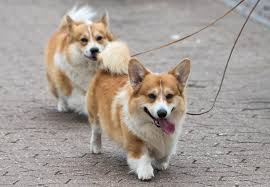
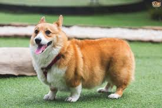

The Pembroke Welsh Corgi (Welsh for "dwarf dog") is a cattle herding dog breed which originated in Pembrokeshire, Wales.
It is one of two breeds known as a Welsh Corgi. The other is the Cardigan Welsh Corgi, and both descend from the line of northern spitz-type dogs (such as the Siberian Husky). Another theory is that Pembrokes are descended from the Swedish Vallhunds, which were crossed with the local Welsh herding dogs. The Pembroke Welsh Corgi is the younger of the two Corgi breeds and is a separate and distinct breed from the Cardigan. The corgi is one of the smallest dogs in the Herding Group. Pembroke Welsh Corgis are famous as the preferred breed of Queen Elizabeth II, who has owned more than 30 during her reign. Although these dogs have been favoured by British royalty for more than seventy years, among the British public they have recently fallen into decline in terms of popularity and demand. However, they remain very popular in the United States, where cities such as New York, Boston, and Los Angeles hold annual "Corgi Meetups," in which hundreds of dogs and their owners congregate to spend the day.
The Pembroke Welsh Corgi has been ranked 11th in Stanley Coren's The Intelligence of Dogs, which states that it is considered an excellent working dog. According to the American Kennel Club, Pembroke Welsh Corgis were ranked 15th most popular breed of dog in 2017.
 While some outlying Pembroke Welsh Corgis are born with their tail naturally short or missing, the majority often have their tails docked between 2–5 days old due to historical tradition or in order to conform to the Breed Standard.[13] Artificial docking was needed for the dog to do its job as a herding dog in the United Kingdom. A non-herding, "companion" dog was considered a luxury under tax law, and attracted a tax, so to demonstrate that their dogs were herding dogs, owners had to ensure the dogs had docked or bobbed tails. The Kennel Club, the United Kennel Club, and the FCI allow intact tails in Conformation shows. The AKC Standard states tails should be docked no longer than 2 inches (5 cm). In many countries, docking has been deemed illegal.
Pembroke Welsh Corgis are very affectionate, love to be involved in the family, and tend to follow wherever their owners go. They have a great desire to please their owners, thus making them eager to learn and train. The dogs are easy to train and are ranked as the eleventh most intelligent dog in Stanley Coren's The Intelligence of Dogs. Besides herding, they also function as watchdogs due to their alertness and tendency to bark only as needed. Most Pembrokes will seek the attention of everyone they meet and behave well around children and other pets. It is important to socialise this breed with other animals, adults, and children when they are very young to avoid any anti-social behavior or aggression later in life. Due to their herding instinct, they love to chase anything that moves, so it is best to keep them inside fenced areas. The herding instinct will also cause some younger Pembrokes to nip at their owners' ankles.
Pembrokes have an average life expectancy of 12–15 years. Pembroke Welsh Corgis are achondroplastic, meaning they are a "true dwarf" breed. As such, their stature and build can lead to certain non-inherited health conditions, but genetic issues should also be considered. Commonly, Pembrokes can suffer from monorchidism, Von Willebrand's disease, hip dysplasia, degenerative myelopathy (DM), and inherited eye problems such as progressive retinal atrophy. Genetic testing is available for Pembroke Welsh Corgis to avoid these issues and enhance the genetic health pool. Pembrokes are also prone to obesity given a robust appetite, characteristic of herding group breeds.